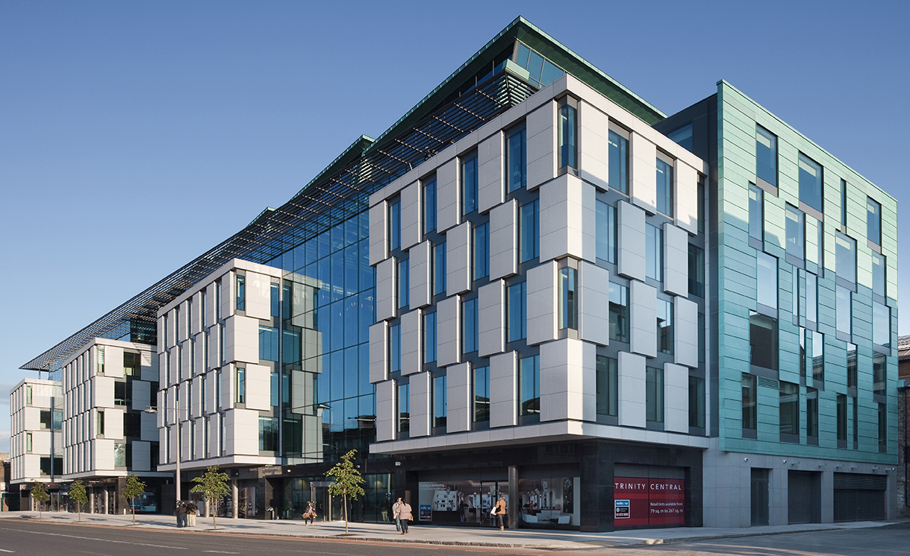
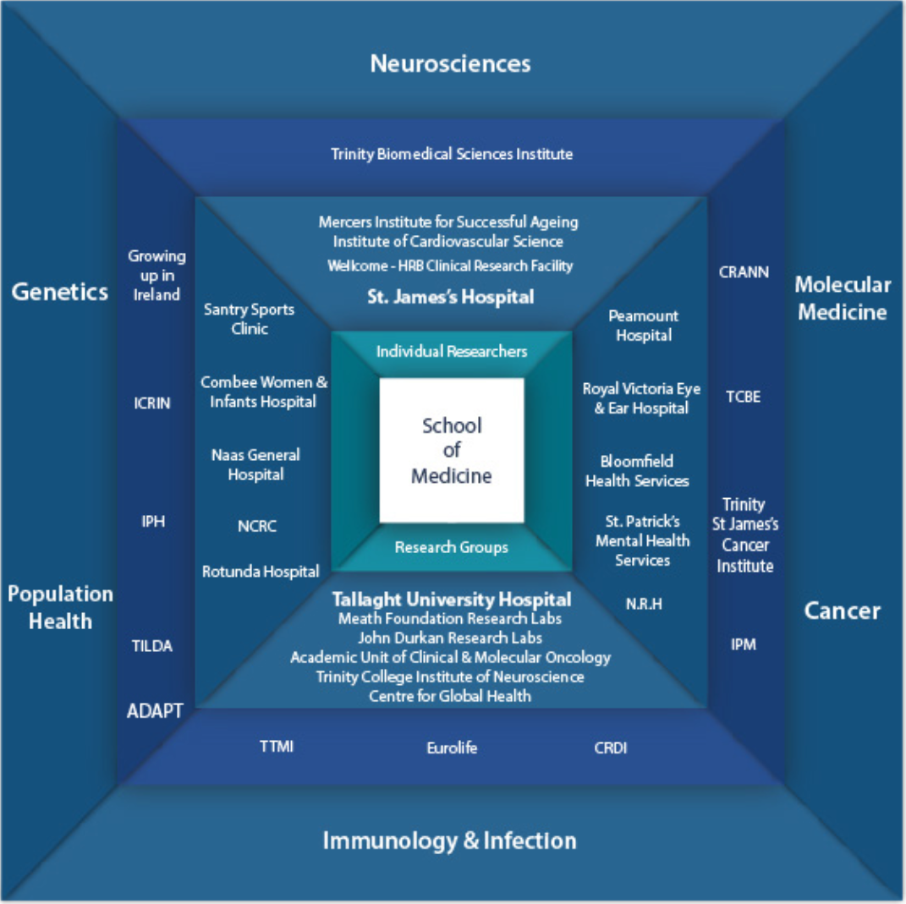
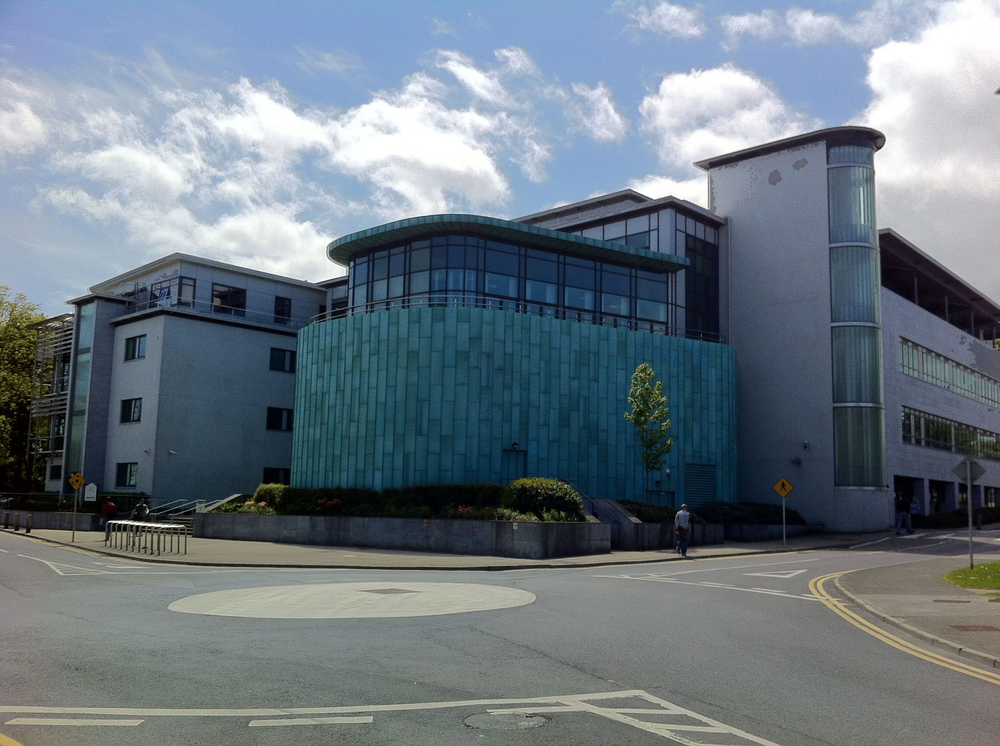

Comprehensive guide to research institutes and universities in Ireland that a person can donate their whole body post-mortem:
School of Medicine - Trinity College Dublin

The School of Medicine Trinity
College Dublin, the University of
Dublin, is a unique institution, which
celebrated its Tercentenary in 2011.
The School, through its educational
programmes, strives to be innovative,
research-driven, interdisciplinary
and international.
Research Themes:
The School of Medicine is involved in a number of multifaceted research programmes involving many disciplines and in some cases collaboration's with other Universities. The School has five main research themes:
Cancer
Genetics
Immunology and Infection
Molecular Medicine
Neurosciences

Royal College of Surgeons in Ireland
The Department of Anatomy and
Regenerative Medicine is the oldest
department in RCSI – they have been
teaching anatomy, the structure of the
human body, and biology in the College
since 1785.
The Anatomy Room was built
in 1812 when Abraham Colles was
Professor of Anatomy at RCSI. We still
follow his example today.
Research Themes:
RCSI has significantly enhanced its research capability, competitiveness and impact through strategic investment in people and research infrastructure. Relentlessly focused on quality and impact, RCSI has developed research centres in areas of excellence and critical mass, focused on clinical and patient-centred research.The School has thirteen main research themes:
Cancer
Vascular Biology
Endocrinology
Respiratory Medicine
Immunity, Infection and Inflammation
Gynaecology, Obstetrics and Perinatal Health
Chemistry and Pharmaceutical Sciences
Biomaterials and Regenerative Medicine
Nursing and Midwifery
National University of Ireland, Galway

NUI Galway is world-renowned as an
expert research-led University. We
emphasise inter-disciplinary research
programmes, and collaborations with
industry partners in areas of strategic
importance, both regionally and
nationally.
Research Themes:
NUI Galway aims to be firmly embedded among the top rank of research universities. The University makes a meaningful contribution internationally, nationally, and to the region, following a prioritise a set of research themes. Five thematic research priorities at NUI Galway have been identified and these are listed below: